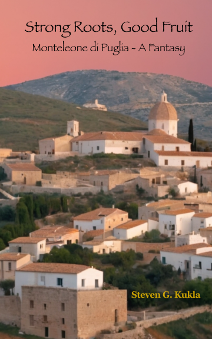

3rd Edition · Available in English & Italian
Strong Roots, Good Fruit
A Family Story and the Gift of La Leonessa
Radici Forti, Frutti Buoni — Una Storia di Famiglia e il Dono de La Leonessa
Original books, graphic novellas, poems, and short stories — tracing a family heritage rooted in southern Italy. A bilingual work available in English and Italian editions.